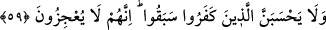

tehdit mahiyetinde olması da muhtemeldir. Bu takdirde sanki şöyle buyurulmuştur:
“Anlaşmalı olduğunuz bir kavmin hıyanet edeceğini bilirsen ahidlerini yüzlerine çal ve
sonra da onlarla savaş. Çünkü Allah hâinleri sevmez. Madem ki onların hallerinin ve
tavırlarının hiyanet olduğunu biliyorsun öyleyse onlar da bu hainler grubuna dahildir.
Bilesin ki bir takım zannî emarelerle anlaşmalı bir toplumun hıyanet edeceği ortaya
çıkarsa devlet başkanının ahdi bozduğunu apaçık karşı tarafa bildirmesi gerekir. Şâyet
karşı tarafın ahdi bozduğu kesin ve açıksa o takdirde anlaşmanın bozulduğunun karşı
tarafa bildirilmesine gerek kalmaz. Nitekim Mekkeliler Nebî (a.s.)’ın zimmeti/koruması
altında olan Huzâa kabîlesine saldırarak ahidlerini bozunca Rasûlullah (s.a.v.) onlara
böyle yapmıştır. Artık müslümanların da anlaşmayı bozduklarını onlara açıkça
söylemelerinin bir anlamı kalmadığı için haber verilmeden Mekke fethine çıkılmıştır.
Muharebe öncesinde ahdi bozmanın karşı tarafa açıkça ilan edilmesi emri hatıra şöyle
bir soru getirebilir: “Ahdi bozduğumuzu kendilerine bildirince onların bütün güçleri ile
bize karşı koymak için hazırlanacakları ya da kaçacakları ve her iki durumda da
elimizden kurtulacakları, dolayısıyla onlardan intikam alma maksadının mümkün
olmayacağı âşikar iken nasıl olur da ahdin bozulduğu kendilerine açıkça bildirilir?
Onların ahdi bozduklarının emârelerinin görülmesi ahdi bozduğumuzu bildirmeden
muharebe açmadaki haklılığımız için kâfi değil midir?”
İşte Allah Teâlâ bu mahzûru şöyle buyurarak gidermiştir:
59. İnkar edenler, (elimizden kurtulup) geçtiklerini sanmasınlar. Onlar bizi âciz
bırakamazlar.
“İnkar edenler,” kaçarak elimizden kurtulup “geçtiklerini” geçip gittiklerini ve
yakalanmayacaklarını “sanmasınlar.” Bedir’de ve diğer savaşlarda ele geçirilemeyen,
Hz. Peygamber (a.s.)’a eziyet eden ve ona isyanda ileri gidenlerin hepsi bu âyetin
hükmüne dâhildir. “Onlar bizi âciz bırakamazlar.” yani onlar kaçıp kurtulamazlar,
onları arayanı kendilerini yakalama konusunda âciz bulmayacaklardır.
Âyette masiyetlere cüretle atılan nefislere tehdit vardır. Hakikatte böyle birisi,
Allah’a karşı cürette bulunmaktadır.
Seriy Sakatî (k.s.)’un şöyle dediği nakledilmiştir: Bir gün şehrin merkez camiinde
va’z u nasihat ediyordum. Yanıma gâyet güzel giyimli yakışıklı bir delikanlı gelip durdu.
Yanında arkadaşları da vardı. Sohbetimi dinledi. Vaazımda “Kuvvetliye karşı gelen
zayıfa şaşılır.” dediğimi duydu. Gencin beti benzi değişti, sonra da oradan ayrıldı.
Ertesi gün aynı yerde yine vaaz ediyordum. Çok geçmeden o delikanlı çıka geldi. Selam
verip iki rekat namaz kıldı. Sonra da bana:
“–Ey Seriy, dün sen “Kuvvetliye karşı gelen zayıfa şaşılır.” demiştin. Bu sözün